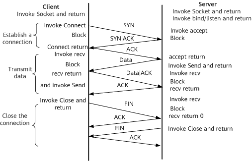

Definition
TCP defined in standards ensures high-reliability transmission between hosts and provides reliable, connection-oriented, and full-duplex services for user processes. In addition, TCP transmits data through sequenced and nonstructural byte streams. It is an end-to-end, connection-oriented, and reliable protocol that supports multiple network applications. TCP assumes that the lower layer can provide only unreliable datagrams, which is the reason that TCP can be run on a network composed of different types of hardware.
Fundamentals
TCP provides connection-oriented and reliable byte stream services. Connection-oriented means that the two applications (generally a client and a server) must establish a TCP connection with each other before they can exchange data. The three-way handshake is required for establishing a TCP connection. The client sends a SYN packet, the server responds with a SYN+ACK packet, and then the client responds with an ACK packet. Figure 1 shows the setup and teardown of a TCP connection.
Figure 1 Setup and teardown of a TCP connection
- Establishing a connection
- The TCP server and TCP client invoke the Socket to prepare for receiving a connection request.
- The TCP client sends a connection request packet to the server.
- After receiving the request packet, the TCP server sends an acknowledgment packet if it accepts the connection request.
- After receiving the acknowledgment packet, the TCP client also sends an acknowledgment packet to the server. In this case, the TCP connection is established, and the client enters the connection established state.
- After receiving the acknowledgment packet from the client, the server also enters the connection established state. In this case, the two parties can communicate with each other.
- Closing the connection
- The TCP client sends a connection close packet and stops sending data.
- After receiving the connection close packet, the TCP server sends an acknowledgment packet.
- After receiving the acknowledgment packet from the server, the TCP client enters the FIN-Wait state and waits for a connection close packet from the server. Before receiving the connection close packet, the TCP client still needs to receive data from the server.
- After sending data, the TCP server sends a connection close packet to the client. The server enters the final acknowledgment state and waits for the acknowledgment from the client.
- After receiving the connection close packet from the server, the TCP client sends an acknowledgment packet.
- After receiving the acknowledgment packet from the client, the TCP server enters the closed state. In this case, the TCP connection is closed.